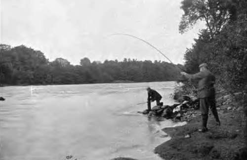
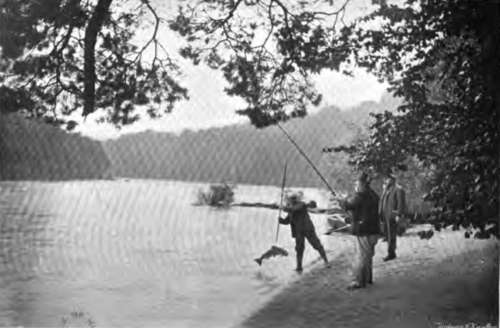
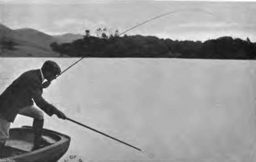
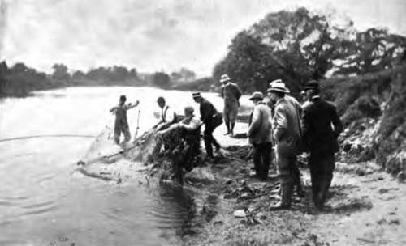

Fishery Laws. Part 5
Description
This section is from the book "Fishing", by Horace G. Hutchinson. Also available from Amazon: Fishing.
Fishery Laws. Part 5
In prosecutions before justices, which are the usual form that fishery litigation takes, the prosecutor, if he is the tenant, must remember that, unless he has a lease of the fishing rights by a deed, that is by a document under seal, he has no legal right to prosecute, and a prosecution by him against a trespasser must, if the objection was taken, be dismissed. Rights of the class to which fishing rights belong only pass by deed. There is also this very important point to be remembered that, by statute, shooting rights, that is, rights to the game, are given to the occupier, unless expressly reserved, but the Act does not apply to fishing rights, and as to these the question is, Do they belong to the landlord or his tenant? This turns on the question under what does the tenant hold ? If he holds by a lease or agreement, under seal, then the question is whether on the wording of that agreement the fishing has been given the tenant, not whether it has been reserved to the landlord ? Unless the landlord has reserved the right to enter on the land to fish, he may not be able to exercise the right, or give a lessee of the fishery the power to exercise the right, but in law the right to fish does not necessarily pass to the tenant. Unless the document under which the tenant holds is under seal, it is clear that the right remains in the landlord. A tenant of fishing rights should, therefore, always make sure of two things-
(1) Whether the right of fishing is legally in the hands of the landlord or tenant; and (2) That he gets an instrument under seal from whoever has the right of granting it to him. If he does not do this he may see the best part of his fishery fished, as he was going fishing, by a poacher, and not be able to prevent him doing so. For he is only a licensee, and can do nothing but enjoy the permission given to him. It is true that these points do not often arise, but that they may do so should make a person who pays for a fishery see that he gets it.
As has already been mentioned, it is impossible to get a conviction before justices against a trespasser who sets up a bond-fide claim of right. In taking a fishing great care should be exercised to see that this mode of poaching cannot be used. To go to the cost of turning down fish, and to find that a costly action is the only way to prevent them being poached by some claimant of an utterly absurd right, is an example of the sic vas non vobis doctrine that is far from pleasant. Another point to be guarded against is that of the occupier of the land giving leave to fish. Farm boys naturally poach, and say they have their master's leave. In a number of cases it would be very difficult to prove that this was not so, especially if the fishing tenant was not on good terms with the farmer. In such a case, unless it can be proved clearly that the occupier had no right to give leave, it would not be easy to get a conviction.
Numberless other points as to the difficulty of effectually protecting fishing rights, if they are rented, may be given. The only safe way is to get a document under seal to which all persons who might set up adverse claims are parties. It may be troublesome and expensive to get, but it is less troublesome and less expensive than the disputes that will follow if it is not obtained.
Local Fishery Laws
In various places there are in force additions and alterations to the general laws, in some cases under local Acts of Parliament, in others under local by-laws. Local acts used to be very numerous, but for practical purposes only three groups need now be considered,-these are the Tweed, the Thames, and Norfolk and Suffolk. Local by-laws are in force in all the fishery districts, and of these a tabular summary is given which will suffice to give an idea of what the law is in different places.
The local laws relating to fisheries may be thus summarised:-
In England And Wales
As to salmon the annual close time has been varied in the following districts, in all others it remains as fixed by statute.
103. - Bringing Him In
Sept. 1 to Feb. 1, both days inclusive, for nets, and Nov. 1 to Feb. 1 for rods :-
District. | Nets. | Rods. |
Adur .... | • | Oct. 1 to Feb. 2. |
Avon (Devon) . | Sept. 30 to May 1 | Nov. 30 to May 1. |
Avon and Stour. | July 31 to Feb. 1 | Oct. 2 to Feb. 1. |
Axe | Sept. 20 to April 30 | Nov. 20 to April 30. |
Ayron .... | • • • | 1 Nov. 15 to Feb. 14. |
Camel .... | Sept. 21 to April 4 | Dec. 1 to April 3a |
Cleddy .... | Sept 15 to March 15 | Nov. 1 to Feb. 1. |
Conway . . . | Sept. 15 to April 30 | Nov. 15 to April 30. |
Coquet .... | Sept. 15 to March 25 | 1 Nov. 1 to Jan. 31. |
Dart..... | Sept. 1 to March 12 | Oct. 16 to Feb. 28. |
Dee..... | Sept. 1 to March 31 | Nov. 2 to March 31. |
Derwent . . . | Sept. 15 to March 10 | Nov. 15 to March 10. |
Dovey .... | Sept 14 to April 30 | Nov. 1 to April 30. |
Dwyfach . . . | Sept 15 to March 1 | Nov. 15 to March 1. |
Eden .... | Sept 10 to Feb. 10 | Nov. 16 to Feb. 15. |
Elwy and Clwyd | Sept 15 to May 15 | Nov. 15 to May 15. |
Exe | Sept 1 to March 1 | Oct 20 to March 1. |
Fowey .... | Nov. 1 to April 4 | Dec 1 to April 3a |
Kent | Sept 15 to March 31 | Nov. 15 to March 31. |
Lune .... | Sept.. 1 to March 1 | Nov. 2 to March 1. |
Ogmore . . . | Sept. 15 to April 30 | Nov. 15 to April 30. |
Ouse (Sussex) . | Sept 1 to April 1 | Nov. 1 to April 1. |
Rhymney . . . | Sept 1 to April 1 | Nov. 2 to April 1. |
Ribble .... | Sept. 1 to March 1 | Nov. 2 to March 1. |
Seiont .... | Sept. 15 to March 1 | Nov. 15 to March 1. |
Severn .... | | Aug. 15 to Feb. 1 | ... |
Stour(Canterbury) | Sept. 1 to May 1 | Nov. 2 to May 1. |
Taffand Ely . . | 1 Aug. 31 to April 30 | Nov. 15 to April 30. |
Taw and Torridge! | ! Sept. 21 to April 30 | Nov. 16 to March 31. |
Teign .... | Sept. 1 to March 2 | Nov. 1 to March 2. |
Towy .... | Sept. 1 to April 1 | Oct 15 to April 1. |
Usk..... | Sept. 1 to March 1 | Nov. 2 to April 1. |
West Cumberland | Sept 15 to March 31 | Nov.14 to March 10. |
Wye..... | • • • | |
Yorkshire . . | Sept 1 to Feb. 1 | Nov. 16 to last of Feb. |
A11 dates are inclusive.
Use Of Gaff
A gaff can only be legally used in the following districts between the dates mentioned; elsewhere no time is fixed, so it can be used during all the fishing season for rods:-
Coquet .... | Feb. 1 to Sept. 30. |
Conway .... | May 1 to Oct 31. |
Dart..... | April 2 to Oct 15. |
Derwent .... | July 1 to Nov. 14. |
Dovey..... | May 31 to Oct. 20. |
Eden..... | July 1 to Nov. 15. |
Exe..... | March 15 to Sept. 30. |
Kent..... | June 2 to Oct. 31. |
Rhymney .... | May 1 to Nov. 1. |
Ribble .... | May 1 to Nov. 1. |
Sciont .... | March 2 to Nov. 1. |
Taff and Ely ... | June 1 to Nov. 1. |
Taw and Torridge | June 1 to Nov. 15. |
Teign..... | May 1 to Sept. 1. |
Usk..... | May 1 to Nov. 1. |
Wye..... | March 15 to Nov. 1. |
West Cumberland | July 1 to Nov. 13. |
Yorkshire .... | May 1 to Nov. 1. |
All dates are inclusive.
105. - Use Of Gaff.
Use Of Nets
In the following districts by-laws defining the kind of nets for salmon, the size of mesh, the use of nets at night, and the use of nets for fish other than salmon during the close time have been made:-
District. | Kind of Net. | Mesh of Net.* | Night Netting. | Use of Net for other Fish. |
Adur | + | |||
Avon and Stour . | - | - | ||
Avon (Devon) . | + | - | ||
Axe..... | - | - | - | |
Ayron .... | - | - | - | |
Camel .... | - | - | ||
Cleddy .... | - | - | - | |
Coquet .... | - | - | - | |
Cuckmere . . . | - | |||
Dart | - | - | ||
Dee | - | + | - | - |
Dovey .... | + | |||
Eden .... | - | - | 1 | |
Elwy and Clwyd | - | |||
Exe | - | - | ||
Fowey .... | - | - | - | |
Kent | - | |||
Lune .... | - | |||
Ogmore ... | - | - | - | |
Ouse (Sussex) . | + | - | ||
Rhymney ... 1 | - | - | - | |
Ribble .... | ||||
Rother .... | ||||
Seiont .... | - | - | ||
Severn .... | - | - | ||
Taffand Ely | - | |||
Taw and Torridge | - | - | - | |
Tamar and Plym | - | - | ||
Tees .... | - | |||
Teify .... | - | |||
Teign .... | - | - | - | |
Towy .... | - | - | - | |
Trent . . . . | - | |||
Tyne .... | - | |||
Usk..... | - | - | - | - |
Wye..... | - | - | - | |
Yorkshire . . . |
* + means an increase, - a decrease.
The other salmon by-laws relate to weekly close time, fishing at the mouth of rivers with nets, fixing the time when gratings are to be kept up, form of licence, marking and labelling nets and boats.
The rate at which licence duties are payable in the different districts in England and Wales varies greatly. The following table gives every fishery district in England and Wales and the sum charged for rods. Nets vary with the size and nature of the net used :-
District. | Salmon.* | Trout and Char. | |||||||
s. | d. | s. | d. | ||||||
Eden | 1 | 1 | 0 | season | X | 2 | 6 | season | X |
Derwent | 1 | 0 | 0 | " | X | 5 | 0 | " | X |
West Cumberland . . | 0 | 10 | 6 | " | X | 2 | 6 | " | X |
Kent | 0 | 10 | 0 | " | X | 5 | 0 | " | x |
Lune | 1 | 0 | 0 | " | X | 2 | 6 | " | |
Ribble. ...... | 1 | 0 | 0 | " | X | 5 | 0 | " | x |
Dee | 1 | 0 | 0 | " | X | ... | |||
Elwy and Clwyd . . . | 1 | 0 | 0 | " | 4 | 6 | " | x | |
Conway | 1 | 0 | 0 | " | X | 1 | 0 | " | X |
Seiont | 1 | 1 | 0 | " | X | 5 | 0 | " | x 1 |
Dwyfach | 1 | 1 | 0 | " | X | 7 | 0 | " | 1 X |
Dovey | 1 | 0 | 0 | " | X | 1 | 0 | " | 1 |
Ayron | 0 | 1O | 0 | " | X | 2 | 6 | " | X |
Teifi....... | 1 | 0 | 0 | " | X | 2 | 6 | " | |
Cleddy...... | 0 | 10 | 6 | " | 3 | 6 | " | X | |
Towy | 1 | 1 | 0 | " | 2 | 6 | " | ||
Ogmore | 0 | 1O | 6 | " | 2 | 0 | " | ||
Taff and Ely .... | 0 | 1O | 6 | " | 2 | 6 | " | ||
Rhymney | 0 | 1O | 0 | " | 1 | 0 | " | 1 | |
Usk and Ebbw . . . | 1 | 0 | 0 | " | 1 | 0 | " | ||
Wye....... | 1 | 0 | 0 | " | 1 | 0 | " | ||
Seven | 0 | 1O | 0 | " | 2 | 0 | " | X | |
Avon. Brue, and Parret. | 0 | 7 | 6 | " | 2 | 6 | " | X | |
Taw and Torridge . . | 1 | 4 | 0 | " | ... | ||||
* The cross means that licence for a shorter period or for a smaller area than the whole district can be had at lower rates.
District-continued. | Salmon. * | Trout and Char. | |||||||
£ | s. | d. | s. | d. | |||||
Camel | 0 | 12 | 0 | season | X | 4 | 0 | season | X |
Fowey | 0 | 15 | 0 | " | 5 | 0 | |||
Tamar and Plym . . . | 0 | 7 | 6 | " | • • • | ||||
Avon (Devon) .... | 1 | 0 | 0 | " | 10 | 0 | " | X | |
Dart | 1 | 0 | 0 | " | X | 10 | 0 | " | X |
Teign | 1 | 0 | 0 | " | X | 2 | 6 | " | |
Exe | 1 | 0 | 0 | " | X | 2 | 6 | " | X |
Otter | • • • | • • • | |||||||
Axe | 0 | 10 | 0 | " | 2 | 6 | " | ||
Frome | 1 | 0 | 0 | " | • • • | ||||
Avon and Stour . . . | 1 | 0 | 0 | " | 5 | 0 | " | X | |
Adur....... | 0 | 5 | 0 | " | 1 | 0 | " | ||
Ouse (Sussex) .... | 0 | 5 | 0 | " | • • • | ||||
Cuckmere | 0 | 5 | 0 | " | 1 | 0 | " | ||
Rother | • • • | ||||||||
Stour (Canterbury) . . | 1 | 0 | 0 | " | |||||
Suffolk and Essex. . . | |||||||||
Norfolk and Suffolk, E . | |||||||||
Norfolk and Suffolk, W . | |||||||||
Ouse and Nene . . . | |||||||||
Welland...... | |||||||||
Witham...... | 2 | 6 | " | X | |||||
Trent | 10 | 0 | " | 2 | 6 | " | X | ||
Yorkshire | 1 | 0 | 0 | " | 1 | 0 | " | ||
Esk (Yorkshire) . . | 0 | 10 | 0 | " | X | 1 | 6 | " | X |
Tee | 1 | 0 | 0 | " | 2 | 6 | " | ||
Wear....... | 0 | 5 | 0 | " | 0 | " | |||
Tyne | 1 | 0 | 0 | " | X | 2 | 6 | " | X |
Coquet | 0 | 5 | 0 | " | 2 | 6 | " | ||
* The cross means that licence for a shorter period or for a smaller area than the whole district can be had at lower rates.
Continue to: